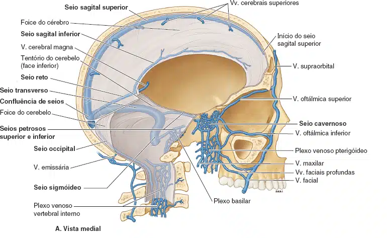
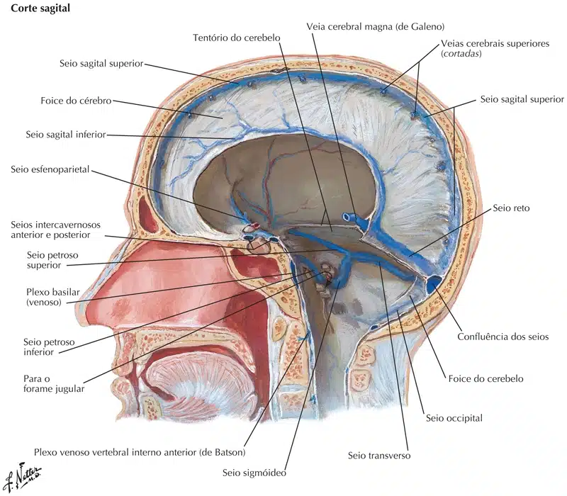
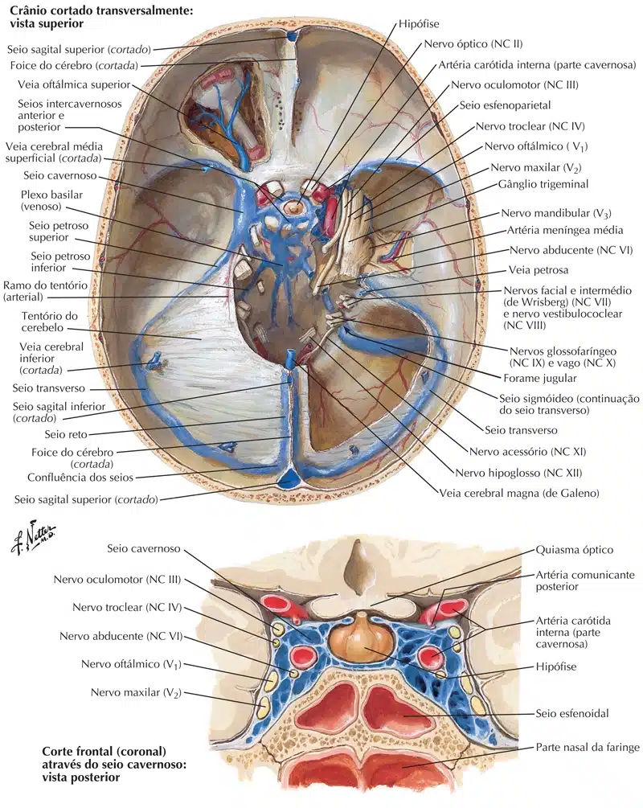
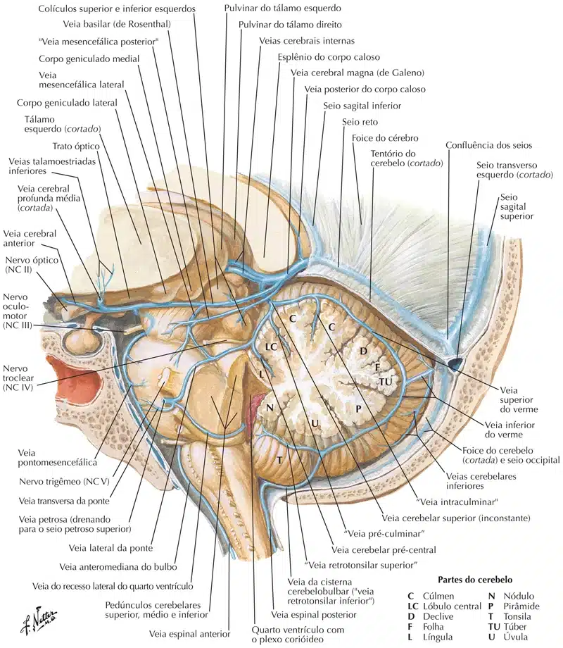

A drenagem venosa do encéfalo é realizada pelos sistemas venosos superficial e profundo.
O sistema venoso superficial é formado por veias que drenam o córtex cerebral e a substância branca subjacente.
As veias estão localizadas na superfície do cérebro e drenam para o sistema venoso profundo.
As veias superficiais são dividias em superiores e inferiores.
As veias superficiais superiores drenam a face medial e metade superior da face súpero-lateral do telencéfalo, desembocando do seio transverso.
As veias superficiais inferiores drenam a metade inferior da face súpero-lateral do telencéfalo.
A principal veia superficial inferior é a veia cerebral superficial média.
Essa veia percorre o sulco lateral, desembocando no seio cavernoso e constitui uma importante anastomose entre os sistemas venosos superficiais (superior e inferior) e o sistema venoso profundo.
A drenagem venosa profunda é realizada por veias que desembocam em canais venosos produzidos pelas pregas da dura-máter (seios venosos).
A principal veia profunda é a veia cerebral magna (veia de “Galeno”).
A veia cerebral magna se forma abaixo do esplênio do corpo caloso e, desemboca no seio reto.
Os principais seios da dura-máter que drenam o encéfalo são:
Seio sagital superior, seio sagital inferior, seio reto, seio cavernoso, seio petroso superior, seio petroso inferior, seio transverso e seio sigmóideo.
Na região posterior do encéfalo, entre o lobo occipital e o cerebelo, ocorre a reunião dos seios: sagital superior, reto e transversos, formando a confluência dos seios.
Seio sagital superior: com direção ântero-posterior, percorre superiormente a foice do cérebro, desembocando na confluência dos seios.
Seio sagital inferior: com sentido ântero-pósterior, percorre a margem livre da foice do cérebro, desembocando no seio reto.
Seio reto: localiza-se entre a foice do cérebro e o tentório do cerebelo, desemboca na confluência dos seios.
Seio cavernoso: localiza-se ao lado da sela turca. Drena para os seios petrosos superior e inferior.
Seio petroso superior: está disposto ao longo do tentório do cerebelo, desembocando no seio sigmóideo.
Seio petroso inferior: percorre a base do crânio e desemboca na veia jugular interna.
Seio transveso: origina-se da confluência dos seios.
Dirige-se anteriormente, contornando o tentório do cerebelo, ao alcançar a parte petrosa do osso temporal passa a ser denominado de seio sigmóideo.
Seio sigmóideo: em forma de S, conecta o seio transverso com a veia jugular interna.



